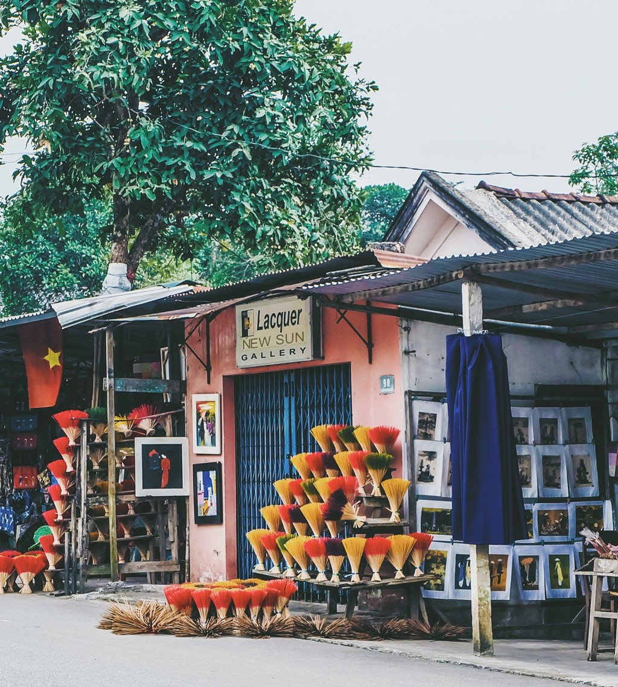

Kiến thức - Kinh nghiệm - Hỏi đáp
TIN NỔI BẬT
Làng hương Thủy Xuân – Điểm đến lý tưởng giữa lòng cố đô Huế
Làng hương Thuỷ Xuân là một trong những địa điểm checkin lý tưởng cho người dân xứ Huế cũng như khách du lịch khi đến Huế tham quan và trải nghiệm. Tại đây bạn không chỉ thấy được những nét đẹp của nghề làm hương mà còn được trải nghiệm cách làm ra sản phẩm và cùng tận hưởng khoảng không gian nhiều màu sắc của những bó hương nơi đây tạo thành.
Làng hương trầm Thủy Xuân cách trung tâm thành phố Huế 7km về hướng Tây Nam, nằm trên con đường Huyền Trân Công Chúa, thuộc phường Thủy Xuân, thành phố Huế. Nơi đây còn nằm trên con đường để đến với địa điểm du lịch nổi tiếng của Huế đó chính là đồi vọng cảnh và lăng Tự Đức.
Theo người dân, nghề làm hương ở đây đã có từ hàng trăm năm trước dưới thới Triều Nguyễn. Hương Thủy Xuân cung cấp chủ yếu để dùng trong Triều đình, các phủ quan lại, cho các thương lái và nhân dân trong vùng. Các nghệ nhân làm hương là những người thợ tỉ mỉ, khéo tay trong từng công đoạn để làm ra cây hương tốt nhất. 
Làng hương Thủy Xuân nằm trên cung đường dẫn đến hai địa điểm du lịch là đồi Vọng cảnh và lăng Tự Đức (Ảnh: Sưu tầm)
Trong bối cảnh du lịch tỉnh Thừa Thiên Huế đang dần phát triển trở lại sau dịch Covid 19 thì làng hương Thủy Xuân trở nên là một địa điểm thú vị và hấp dẫn du khách trong và ngoài nước cũng như người dân Thừa Thiên Huế đến đây tham quan và chụp hình lưu niệm.

Du khách tham quan làng hương Thủy Xuân

Bạn trẻ thích thú chụp hình bên những bó hương sặc ỡ sắc màu

Mọi người khi đến đây có thể thuê áo dài để chụp ảnh
Ngoài ra, khi đến đây tham quan du lịch mọi người không chỉ được tham quan, chụp hình mua các món quà lưu niệm mà du khách và người dân đến đây sẽ được tận mắt chứng kiến các nghệ nhân thực hiện các công đoạn để làm ra một cây hương. Từ khâu chuẩn bị nguyên liệu, khâu làm lõi hương và khâu quan trọng nhất đó chính là se hương công đoạn này đòi hỏi sự thuần thục và dẻo dai của bàn tay người thợ để cho ra một cây hương đều và đẹp mắt nhất

Nghệ nhân Tôn Nữ Ánh Tuyết, chủ cơ sở làm hương Ánh Tuyết đang thực hiện công đoạn se hương bằng tay
để du khách trải nghiệm

Nghệ nhân Ánh Tuyết chụp ảnh lưu niệm cùng du khách
Làng hương Thủy Xuân hiện nay ko chỉ là một làng nghề truyền thống của tỉnh Thừa Thiên Huế mà đó có là một địa điểm thu hút khách du lịch. Không chỉ là làng nghề truyền thống của Huế mà làng hương Thủy Xuân đã trở thành một nét đẹp văn hóa đặc sắc của vùng đất Cố đô được lưu truyền và phát triển đến tận bây giờ.
Media Team
5 công cụ giám sát cơ sở hạ tầng CNTT tốt nhất
Các công cụ và phần mềm giám sát cơ sở hạ tầng CNTT rất quan trọng trong việc theo dõi những hệ thống mạng phức tạp và đang phát triển nhanh chóng như hiện nay.
6 phút trước

Lập trình viên sử dụng 12.000 dòng code ‘lột xác’ hoàn toàn cho đồ họa trong game Quake 2 từ năm 1997
NVIDIA đã bắt tay với các lập trình viên của dự án để có thể tạo ra Quake II RTX, một game thuần hiệu ứng dò tia sáng.
6 phút trước

Chiêm ngưỡng ứng dụng AI mới của Nvidia: Biến nét vẽ nguệch ngoạc theo phong cách MS Paint thành những “kiệt tác” nghệ thuật
Mới đây, các nhà nghiên cứu trí tuệ nhân tạo Nvidia đã phát triển thành công một mô hình học sâu (deep learning) có khả năng...
6 phút trước

Cách mở 178 định dạng ảnh trên Windows 10
Ứng dụng Picture Opener Pro sẽ mở nhiều định dạng ảnh, mà không cần phải chuyển đổi định dạng.
6 phút trước